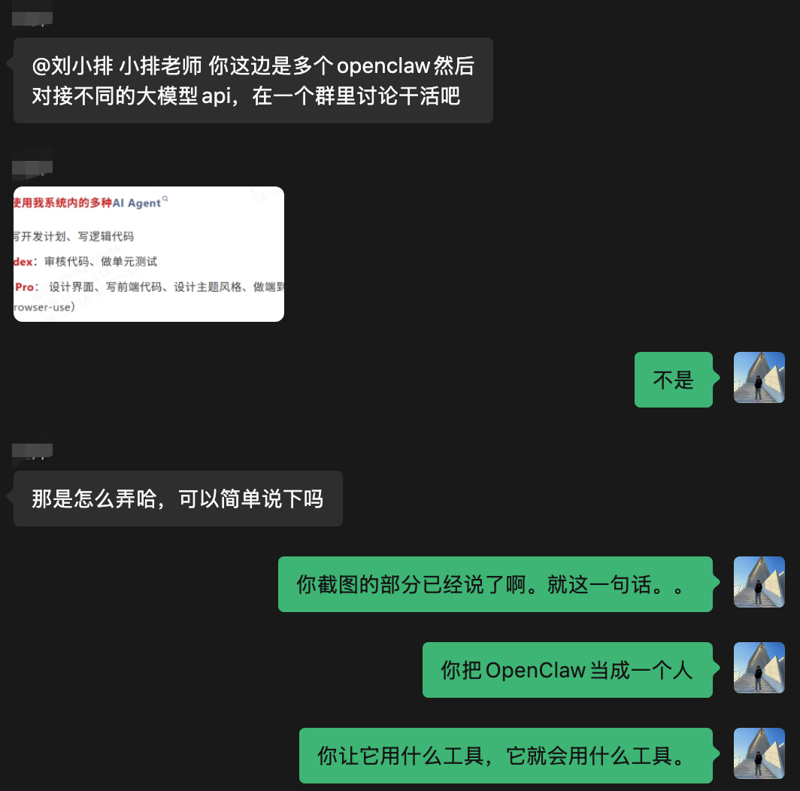
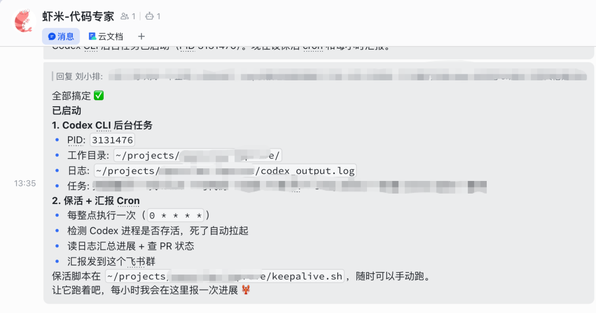
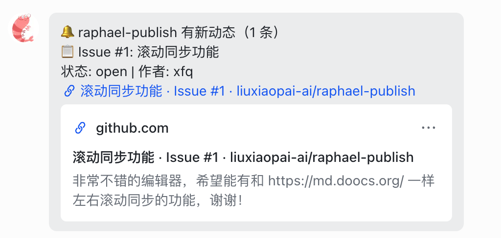
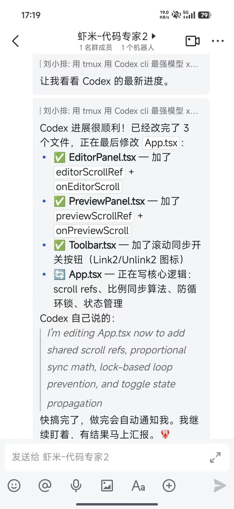
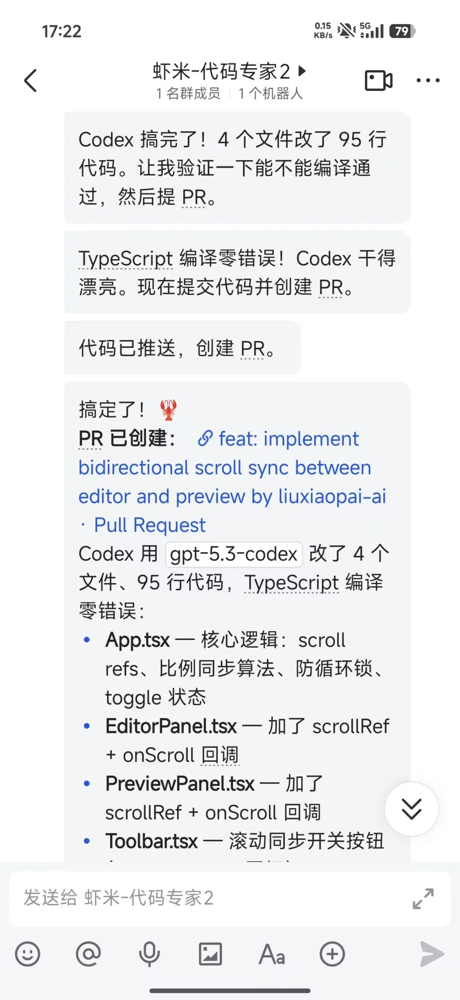
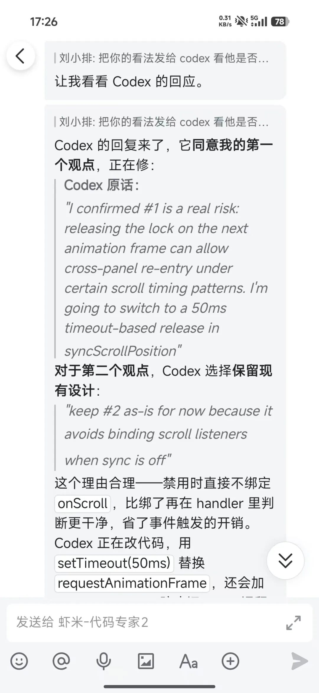
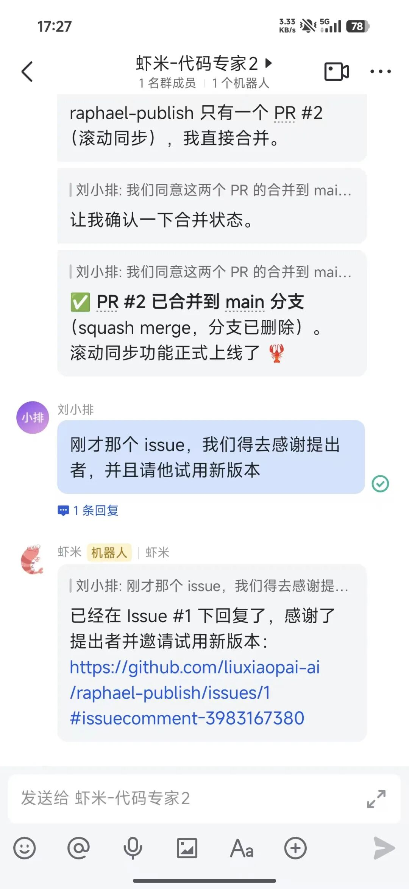
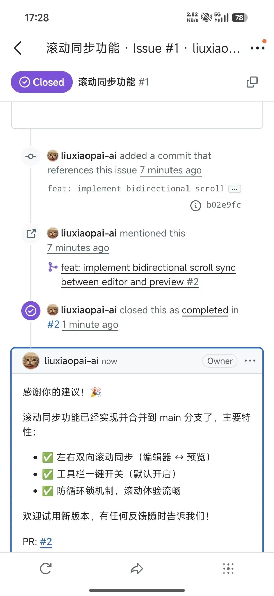

哈喽 大家好，我是刘小排。
我昨天的文章 用OpenClaw自动做了个公众号排版工具，开源 里提到，
小龙虾自动指挥多种AI Agent
- Claude Code with Opus 4.6：写开发计划、写逻辑代码
- Codex CLI with GPT-5.3-Codex：审核代码、做单元测试
- Gemini CLI with Gemini-3.1-Pro： 设计界面、写前端代码、设计主题风格、做端到端自动测试验证（使用browser-use）
好多朋友留言问我是怎么做到的？他们试了一下，发现会超时。
嗯，这是因为现在的Coding Agent可以写好几个小时，按照OpenClaw的设计，如果它调用了一个应用程序很久都没反应，就会超时，并杀死。
那么，如何让小龙虾控制Codex、Claude Code、Gemini CLI去写高强度、需要长时间才能完成的代码任务呢？
马上讲！
要点
要点有两个：
1.说人话
总有朋友留言问“怎么编排小龙虾的流程，让它调用Codex写代码啊”。
这是一个错误的问题。
你能问出这个问题，说明你还根本没把小龙虾当成人类员工来对话。
我的答案很简单： 你怎么安排人类员工干活，你就怎么安排小龙虾干活

2.使用tmux
第二个要点是tmux。
tmux = Terminal Multiplexer
tmux这个工具，程序员都很熟悉。如果你没有技术背景，可以像这样简单理解：它就像一个不会关的虚拟终端房间。就像你在公司电脑上开了个程序，锁屏回家了程序还在跑。tmux 就是那个"不会因为你离开就关掉的桌面"。
tmux 完全隔离了进程生命周期——不管小龙虾的gateway 怎么重启、exec session 怎么回收，tmux 里的进程都不受影响。
我们需要让小龙虾在tmux里打开Codex、Claude Code、Gemini CLI，即便小龙虾自己遇到超时、重启，也完全不会tmux里的进程。
同时，小龙虾在任何时候，都可以通过读取tmux内的日志，了解里面的Coding Agent当前的进度。
实操
明白了以上两个原理，那剩下了的就好办了。
首次启用
如果是第一次启用，我们稍微写详细一点，把“说人话”和“用tmux”都融合起来。
这是我写的，你可以参考。
我即将给你布置一个需要长时间完成的编程任务。
我的系统中已经安装了Codex CLI，我已经购买了官方包月会员，你不需要配置API。
请你使用tmux打开Codex CLI完成写代码的任务，使用Codex CLI里最强的模型、最大的推理力度。在Codex CLI里，授予Full Access权限。
你还需要做一个日志监控，每10分钟给我汇报Codex CLI的工作进度。这个任务将会执行特别长的时间，如果期间Codex CLI进程死了，你需要重新喊它起来。
写完代码后，你还需要进行Review，如果发现了代码问题，把你意见发给Codex CLI和它讨论，直到你俩达成一致。
准备好之后，大概可以得到这样的效果。 （我把项目和任务简单打码保护一下）

后续启用
哦，对了，首次配置好，以后就简单了。
后续编码的时候，只需要说
用tmux里的Codex写代码
就可以了。
举一反三
刚才示例是Codex CLI的。
你把示例里的关键词换成 Gemini CLI或Claude Code CLI，也同理。
此外， 我们还可以启用Claude Code里的Agent Teams功能，大力出奇迹。
甚至，还可以让这三位大哥互相分工、互相讨论 —— 这也是我最近比较喜欢玩的。
别再问我具体“怎么编排”了，说人话就行。
案例
正好，昨天我们开源的项目，刚才有一个issue
这是小龙虾告诉我的。

我立即命令它：“用tmux用Codex CLI最强模型搞定”
下面是完整截图
可以看出：正如上文所说，小龙虾喊Codex CLI干活了，并且持续总结Codex干活的进度
 |  |
然后，我们来到了小龙虾审核代码、小龙虾和Codex CLI讨论直到达成一致的环节。
从下图可以看看，很有意思：
- 小龙虾(Opus 4.6)提出了两个观点
- 第一个观点，Codex CLI采纳，立即开干
第二个观点，Codex CLI不采纳，并且Codex CLI说服了小龙虾，两者达成了一致！

就这样，增加了一个新功能，上线了。
 |  |
你可以去打开Github看看现场
项目地址
https://github.com/liuxiaopai-ai/raphael-publish
别人提出的功能建议、我的小龙虾的回复
https://github.com/liuxiaopai-ai/raphael-publish/issues/1
小龙虾和Codex协作完成的代码记录
https://github.com/liuxiaopai-ai/raphael-publish/pull/2
简单吧？
期待你的反馈！